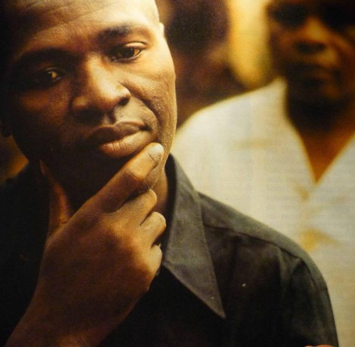
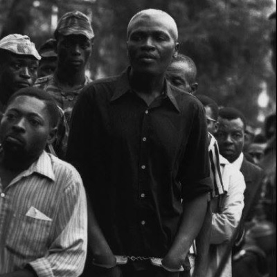
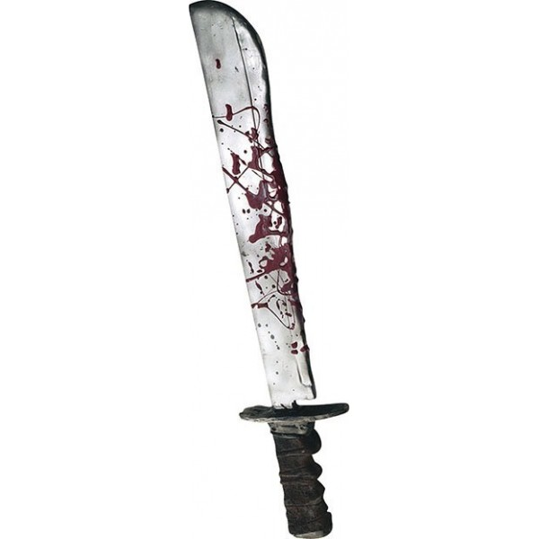

☷ Le 19 MEKHER 6258 - LA RÉSISTANCE
-Article: CAMEROUN: 15 JANVIER 1971- 15 JANVIER 2022 COMMÉMORATION ERNEST OUANDIÉ 51 ANS APRÈS
_______________
Si j'étais né et que j'avais été en âge dans les années 60 - 70, je pense que je n'aurais pas eu d'autres choix que La Résistance. Même en étant conscient que les seuls résultats immédiats ou dans les 10, 20 ans à venir auraient été: l'exclusion et la répression, ou la prison, ou plus...
_______________
Parce que le genou de la Françafrique Foccartienne était bien solidement posé sur le cou du Cameroun, l'empêchant de respirer pour autant que possible s'approprier son air, ses biens et ses richesses.
_______________
Si j'avais alors survécu, peut-être que j'aurais été en colère et pire contre Son Excellence le Président Amadou AHIDJO.
Comme je n'aurais pas pu faire le choix politique qu'il a fait: Jouer au larbin pour pouvoir travailler pour le Cameroun, peut-être que je n'aurais pas compris.
_______________
Peut-être que j'aurais oublié ou ignoré le fait que quelle que soit la brutalité dont il a été coupable (?), et l'assassinat du Père OUANDJIE n'en fait pas partie (?), Son Excellence le Président Amadou AHIDJO était un nationaliste qui a vraiment construit le Pays.
Peut-être que j'aurais oublié ou ignoré que dès le jour où il a eu assez de pouvoir pour sortir les griffes contre la Françafrique, la machine s'est mise en marche pour le déposer.
(voir cet article: Les incroyables réalisations en 10 ans du Président AHIDJO)
_______________
Si j'avais été un résistant dans les années 60, 70, j'espère qu'aujourd'hui j'aurais compris que ce n'est pas contre la mémoire de Son Excellence le Président Amadou AHIDJO qu'il faut se battre, mais contre la frange néo colonialiste/impérialiste occidentale et particulièrement française, qui n'est pas encore morte.
#Afrique #Memoire #Resistance #Liberation
___
refs:
[1] "LES INCROYABLES RÉALISATIONS EN 10 ANS DU PRÉSIDENT AHIDJO"
☷ Le 19 MEKHER 6258 - LA RÉSISTANCE
6528, Mekher 19
  
©6258 Nkensa / template by Bootstrapious